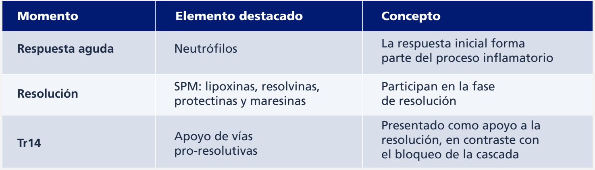
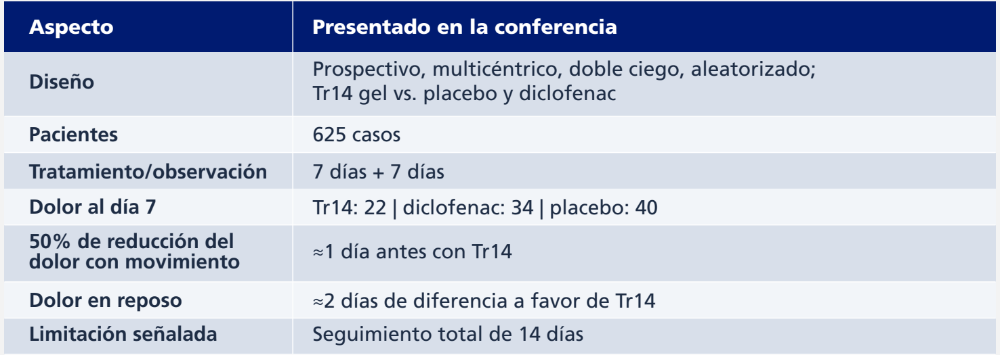
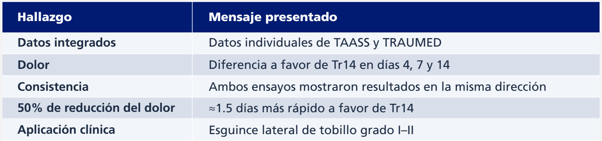

01 EL ENFOQUE
Más allá
del alivio del dolor.
“Es solo un esguince de tobillo”. Con esta frase, el Prof. Ludger Gerdesmeyer abrió una conferencia orientada a cuestionar la aparente simplicidad de una de las lesiones musculoesqueléticas más frecuentes. Su punto de partida fue clínico: incluso en deportistas de alto rendimiento, una recuperación incompleta puede traducirse en pérdida de desempeño, recurrencias y dificultad para regresar al nivel previo. Por eso, planteó que el tratamiento debe adaptarse a las demandas de cada paciente y acompañarse de un programa de rehabilitación individualizado.
El eje conceptual de la presentación fue el soft tissue engineering: entender el esguince como una lesión de tejidos blandos que requiere integrar diferentes componentes, en lugar de aplicar un único protocolo. Gerdesmeyer incluyó el manejo del edema y la inflamación, la carga según tolerancia, el entrenamiento motor y propioceptivo, el stretching tendinoso, el drenaje linfático y, según el caso, otras herramientas físicas. Traumeel®/Tr14 gel fue presentado como un “team player” dentro de esta estrategia integral, y no como una intervención aislada.
Una parte central de la conferencia estuvo dedicada a diferenciar el bloqueo de la inflamación del apoyo a su resolución. Gerdesmeyer describió la resolución como un proceso endógeno en el que intervienen mediadores especializados pro-resolutivos (SPM), mencionando lipoxinas, resolvinas, protectinas y maresinas. En su explicación, la respuesta neutrofílica inicial participa en la posterior generación de señales necesarias para completar la resolución. En este marco presentó a Tr14 como una formulación que no busca suprimir esa cascada, sino apoyar las vías asociadas con la resolución y la biosíntesis de mediadores pro-resolutivos.¹
Resolución de la inflamación: concepto presentado en la conferencia

02 EVIDENCIA CLÍNICA
De TAASS
a TRAUMED.
El recorrido de evidencia clínica comenzó con TAASS, ensayo multicéntrico publicado en 2013 que comparó la aplicación tópica de Traumeel® con diclofenac en el esguince agudo de tobillo. En la conferencia, se destacó la no inferioridad frente al comparador. A continuación, presentó TRAUMED, publicado en 2024: un ensayo prospectivo, multicéntrico, doble ciego y aleatorizado, que incluyó 625 pacientes y comparó Tr14 gel, placebo y diclofenac durante una semana de tratamiento y otra de observación.¹˒²
El criterio principal de valoración de TRAUMED fue el dolor durante el movimiento pasivo, evaluado mediante la escala visual analógica (EVA). Entre los criterios de valoración secundarios se incluyeron el dolor en reposo, la función, el tiempo hasta alcanzar al menos un 50% de reducción del dolor, el uso de medicación de rescate y la seguridad.³
Gerdesmeyer mostró una reducción del dolor favorable a Tr14 frente a placebo y resultados de no inferioridad frente a diclofenac, con diferencias favorables en evaluaciones posteriores. La función se evaluó mediante cuestionario Foot and Ankle Ability Measure (FAAM). Destacó que el 50% de reducción del dolor con movimiento se alcanzó aproximadamente un día antes con Tr14 que con placebo o diclofenac; para dolor en reposo, señaló una diferencia de aproximadamente dos días. Resumió que, al día 7, los puntajes de dolor fueron 22 con Tr14, 34 con diclofenac y 40 con placebo.³
TRAUMED: diseño y resultados destacados por el disertante

03 LECTURA INTEGRADA
Los datos,
en conjunto.
Finalmente presentó el metanálisis que integra los datos individuales de TAASS y TRAUMED. Según las diapositivas y su explicación, ambos ensayos mostraron resultados en la misma dirección, y el análisis combinado favoreció a Tr14 frente a diclofenac en los días 4, 7 y 14. La presentación destacó, además, una reducción del 50% del dolor aproximadamente 1.5 días más rápida con Tr14 en el análisis combinado.⁴
El cierre volvió al concepto inicial: el tratamiento del esguince no se reduce a una única herramienta. Para Gerdesmeyer, Tr14 debe entenderse como parte de una “orquesta” terapéutica integrada a la rehabilitación y al manejo global del tejido blando. También explicitó una limitación de TRAUMED: el seguimiento fue de 14 días, por lo que los efectos a más largo plazo requieren mayor investigación.³
Metanálisis TAASS + TRAUMED
